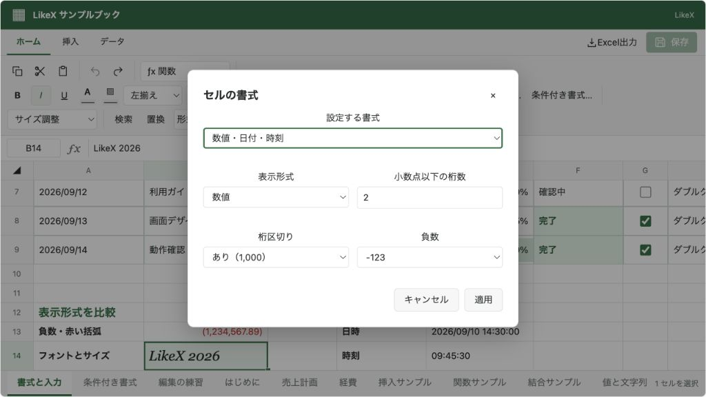
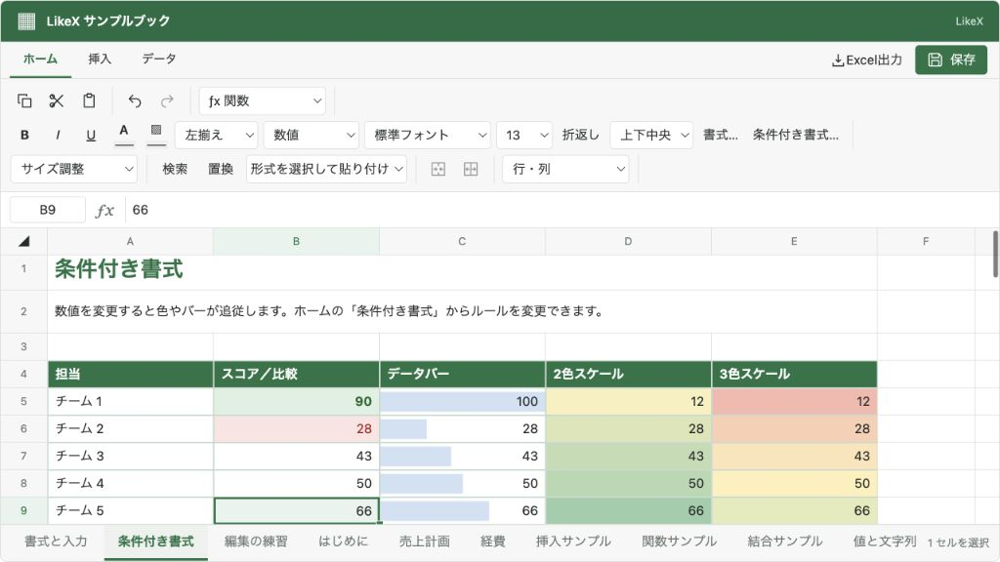

@likex/spreadsheet
書式・サイズ・条件付き書式
文字・罫線・表示形式、行高・列幅、条件に応じた色やデータバーを設定します。
画面例を見る ↓書式はセルの format、行列サイズと条件付き書式はシートのデータに保存します。JSON保存、Undo/Redo、外部コマンド、XLSX出力に対応します。保存した入力値（raw）は書式変更では変わりません。
画面の基本色#
<Spreadsheet
initialWorkbook={workbook}
onSave={saveWorkbook}
primaryColor="#2563eb"
colorMode="system"
style={{ height: 560 }}
/>primaryColor はタイトルバー、保存・確定ボタン、選択枠、アクティブなタブなどのUIに反映します。#RGB / #RRGGBB を受け取り、未指定や不正な値では従来の緑になります。タイトルバーやボタンの文字色、明暗モードごとの選択色は自動調整します。
表示中の変更・削除にも対応し、複数のスプレッドシートに別々の色を指定できます。セル・条件付き書式・図形などに保存された色、JSONやExcelの出力内容、未保存状態・Undo履歴は変わりません。style で指定したCSSは最後に適用するため、既存の個別カスタマイズも優先されます。
画面からの操作#
- ホームの「フォント」: フォントとサイズ、太字・斜体・下線、文字色・背景色。
- 「配置」: 上・上下中央・下、左・中央・右のアイコンで配置を指定します。選択中の設定はボタンの背景と枠で示します。折り返し・セルの結合もここにあります。
- 「表示形式」: 標準・文字列・数値・通貨・パーセント・日付・時刻・日時。「書式…」では罫線の辺・色・太さ・線種、桁区切り、小数桁数、負数のマイナス/括弧/赤色表示を指定できます。
Alt+Enter: セル内で改行。通常のEnterは入力確定して次のセルへ移動します。- 行番号下端と列見出し右端をドラッグ: サイズ変更。グリップの矢印キーでも調整できます。
- グリップのダブルクリック、または「セル」グループの「サイズ調整」: 選択した行/列を内容に合わせて自動調整します。折り返しの後に行の高さを自動調整すると、複数行を表示できます。
- 「スタイル」の「条件付き書式」: 数値の比較、文字列の比較、データバー、2色/3色カラースケール。作成済みルールの削除もできます。
関連する操作を2段にまとめ、グループ名を下に表示しています。狭い表示領域では、左右の矢印から次の見切れているグループまで滑らかに横スクロールできます。矢印はスクロールできる方向にだけ表示し、不要な矢印の余白は取りません。帯の高さやコンポーネント全体の幅を変えず、矢印とメニューを横に並べるため、操作が矢印の下に隠れることもありません。端末でアニメーションを減らす設定が有効な場合は、すぐに移動します。
アイコンには操作名のツールチップがあり、Tabキーでも移動できます。無効にした機能の操作は表示せず、操作がなくなるグループも非表示にします。
フォントは端末にインストールされているものを使用します。フォントサイズと行列サイズの単位はCSS pxです。自動調整は実際のセルのフォント、条件付き書式を適用した表示値、余白・罫線を使って計測し、内容に応じて現在より狭いサイズにも調整します。保存するサイズは表示倍率に影響されません。複数行に結合したセルは行の自動調整、複数列に結合したセルは列の自動調整から除外します。結合全体のサイズは行/列グリップで指定してください。
データとAPIの例#
await spreadsheetRef.current?.executeAsync({
type: "cells.format",
sheetId: "sheet-1",
addresses: ["B2", "B3"],
format: {
fontFamily: "Noto Sans JP",
fontSize: 18,
wrap: true,
verticalAlign: "middle",
numberFormat: "number",
decimalPlaces: 2,
useGrouping: true,
negativeFormat: "red-parentheses",
borders: { bottom: { style: "solid", width: 2, color: "#217346" } },
},
});
await spreadsheetRef.current?.executeAsync({
type: "dimensions.resize",
sheetId: "sheet-1",
rowHeights: { 1: 64, 2: 64 },
columnWidths: { 1: 180 },
});format は既存の書式に部分適用します。ただし borders は辺のマップ全体を置き換えます。borders: {} または辺の style: "none" で明示罫線を消します（通常のグリッド線は残ります）。辺は top/right/bottom/left、線種は solid/dashed/dotted/double/none、太さは 1/2/3 です。
fontSize は1〜200、decimalPlaces は0〜10。行の高さは16〜1000、列の幅は24〜1000です。rows.resize による単一行の変更もできます。dimensions.resize は複数サイズを1操作として適用するため、一度のUndoで戻せます。XLSXには別途Excelの上限が適用されます（Excel出力）。
numberFormat は general/text/number/currency/percent/date/time/datetime。数値は日本語ロケール、通貨はJPYです。日付はISO形式（2026-09-10）、時刻は 12:30:00、日時は 2026-09-10T12:30:00 またはExcelの1900日付方式のシリアル値を表示できます。日時にオフセットがある場合はUTCとして表示します。JSON内のISO文字列は保持し、XLSX出力時だけ対応する日付/時刻シリアルへ変換します。日付の入力規則があるセルは、標準書式でも日付表示になります。
「文字列」（numberFormat: "text"）では、00123 の先頭ゼロや =1+2 をそのまま表示し、数値・数式として解釈しません。入力値は書き換えず、標準（general）へ戻すと通常のルールで再解釈します。たとえば 00123 は数値の 123、=1+2 は計算結果の 3 になります。従来の先頭アポストロフィ（'）による文字列指定も維持し、指定用の最初の1文字は表示から除外します。XLSXには書式コード @ と文字列セルで出力するため、先頭ゼロや式の形をした文字列も保持されます。
内容に合わせて自動調整するAPI#
dimensions.autoFit はGUI・ref・ヘッドレスsession・CLIで使えるJSONコマンドです。axis は row または column、indices は空でない0始まりの番号配列です。バッチ途中で指定すると、それまでのセル・数式・書式変更後の内容から計算します。features.resize、入力検証、Undo／Redoは dimensions.resize と同じ経路です。
await spreadsheetRef.current?.executeAsync({
type: "dimensions.autoFit", sheetId: "sheet-1", axis: "column", indices: [0, 1, 2],
});JSONコマンドはDOMや端末のフォントに依存しない推定幅を使います。GUIは同じ計算にブラウザの文字幅・セルCSSを注入します。ブラウザでGUIと同じ測定をしたい場合は、公開ヘルパーから既存の dimensions.resize コマンドを作れます。
import { createSpreadsheetAutoFitCommand, createSpreadsheetTextMeasurer } from "@likex/spreadsheet";
const command = createSpreadsheetAutoFitCommand(api.getWorkbook(),
{ sheetId: "sheet-1", axis: "row", indices: [0, 1] },
{ measureText: createSpreadsheetTextMeasurer(spreadsheetElement.ownerDocument, spreadsheetElement) });
await api.executeAsync(command);createSpreadsheetAutoFitCommand、SpreadsheetAutoFitTarget、SpreadsheetAutoFitOptions、SpreadsheetTextMeasurer は /model からも利用できます。measureText を省略すればJSONコマンドと同じ決定的な推定値です。注入する関数は文字列とセル書式から0以上の有限のCSS px幅を返します。createSpreadsheetTextMeasurer はブラウザ用の入口からのみ公開し、DOMをモデルへ持ち込みません。
保存するのは計算済みの rowHeights／columnWidths です。SPON・XLSXは通常のサイズ変更と同じ往復で保持します。Excel自身に再計算を要求する自動調整フラグは保存しません。推定と実フォントの測定結果は異なるため、画面との一致が必要ならブラウザ測定を注入してください。
条件付き書式の例#
import type { SpreadsheetConditionalFormatRule } from "@likex/spreadsheet";
const rules: readonly SpreadsheetConditionalFormatRule[] = [
{
id: "negative",
ranges: [{ top: 1, left: 1, bottom: 20, right: 1 }],
type: "comparison",
operator: "lt",
value: 0,
format: { color: "#b42318", background: "#fee2e2" },
},
{
id: "progress",
ranges: [{ top: 1, left: 2, bottom: 20, right: 2 }],
type: "dataBar",
color: "#638ec6",
min: 0,
max: 100,
},
{
id: "heatmap",
ranges: [{ top: 1, left: 3, bottom: 20, right: 3 }],
type: "colorScale",
colors: ["#f8696b", "#ffeb84", "#63be7b"],
},
];
await spreadsheetRef.current?.executeAsync({
type: "conditionalFormats.set", sheetId: "sheet-1", rules,
});行列番号は0始まり、範囲の両端を含みます。conditionalFormats.set はそのシートのルール一覧全体を置き換えます。rules: [] で全解除します。ルールは先頭を優先し、比較/文字列ルールの stopIfTrue: true は一致時に以降のルールを止めます。行列の挿入・削除では範囲も移動/拡張/縮小します。
| 種類 | 主な指定 |
|---|---|
comparison | gt/gte/lt/lte/eq/neq/between/notBetween、value、範囲比較の secondValue、format |
text | contains/notContains/startsWith/endsWith、value、format（大文字小文字を区別せず、文字列をそのまま比較） |
dataBar | color、任意の min/max。未指定時は範囲の数値から計算 |
colorScale | 2色または3色の colors、任意の min/max。3色の中央は数値範囲の中間 |
空欄は比較/文字列ルールに一致しません。数値の比較と視覚化には計算結果が数値であるセルを使います。1シート100ルール、1ルール100範囲までです。XLSXにはExcelのネイティブ条件付き書式として出力します。Excel独自の任意数式ルール、アイコンセット、パーセンタイルなどは対象外です。
機能を無効にする場合#
features.formatting: false は書式変更全体、features.conditionalFormatting: false は条件付き書式の編集、features.resize: false は行列のサイズ変更を無効にします。readOnly でも変更できません。既にデータに保存された書式・サイズ・条件付き書式の表示は保持します。
書式ダイアログのキャンセルは保留中の編集許可要求も取り消します。開いている間に外部からブックが変更された場合は、古い座標への適用を止めて開き直しを案内します。
画面例
{kind=link}

{kind=link}
